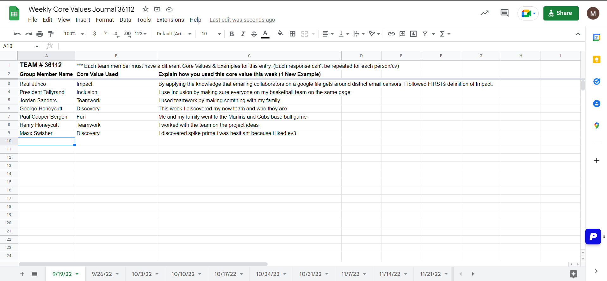

Main Core Values
The 6 Core Values are Discovery, Innovation, Impact, Inclusion, Teamwork, and Fun.
Discovery means when we discover, we explore new skills and ideas.
Innovation means when we innovate, we use creativity and persistence to solve problems.
Impact means we apply what we learn to improve our world.
Inclusion means we respect each other and embrace our differences.
Teamwork means we are stronger when we work together.
Fun means we enjoy and celebrate what we do.
Secondary Core Values
The 2 secondary Core Values are Gracious Professionalism and Coopertition.
Gracious Professionalism is a way of doing things that encourages high- quality work, emphasizes the value of others, respects individuals and the community.
Coopertition is displaying kindness and respect in the face of fierce competition. This means that teams should help and cooperate with each other, even as they compete.
Core Values Journal
So, we have a Core Values Journal where we say what core value we used a day in our life, and then we explain what we did using that core value. For example, Discovery | Last night I discovered how to learn HTML to code this website.
Core Values Challenge
Core Values Challenge is where the whole team comes together and does a challenge together. This would fall under the Fun Core Value.